REST
REST is architectural style, not standard
REST is protocol agnostic
JSON isn't rest, HTTPs isn't even REST
CLIENT changes STATE depending upon the representation of the resource you're accessing (from the Server or otherwise)
and that is REST (Representational State Transfer)
- 1) Uniform Interface --- API and consumers share one single, technical interface: URI, Method (HTTP requests), Media Type (payload aka JSON etc..)
- 2) Client-Server --- client and server are separated (can evolve separately) = server shouldn't be concerned with User-Interface or HOW the client is implemented (we can design our API without any clue of what the client is).
- 3) Stateless --- state is contained within the request itself (STATE is kept on the client ... not on the server)
- 4) Layered System --- client cannot tell what layer it's connected to (no layer can access a layer it isn't connected to (next)) - reduces overall complexity
- 5) Cacheable --- each response message must explicitly state whether it can be cached or not (HTTP cache (holy grail of cacheing)
- 6) Code on Demand --- (optional) - server can extend client functionality (if client is web app...server can transfer JS code to the client to extend its functionality.
REST is defined by 6 Constraints (constraints can have positive and negative impacts)
Resource identifiers (the URI where the resources can be found)
each resource has its own URI
Nouns: things, not actions (actions are meant for the HTTP methods)
helps with predictibility
represent hierachy when naming resources - api/authors/{authorId}/books
filters, sorting orders...aren't resources (should be done via Query string) -api/authors?orderBy=name
api/authors/{authorId}/totalamountofpages
HTTP method (POST, PUT, GET)
Payload (representation: media types (application JSON))
- 1) Create a controller
- 2) Inject a Repository
- 3) create Action methods
- 4) Return results
Impelementing Outer Facing Contract
Endpoint Routing
Routing matches a request URI to an action on the controller
2 Middleware need injected:
app.useRouting() - marks the position in the middleware pipeline where a routing decision is made
app.UseAuthorization()
app.UseEndpoints() - marks the position in the middleware pipeline where the selected endpoint is executed
Convention-based Routing (typically used for Web Applications)
app.UseEndpoints(endpoints => { endpoints.MapControllerRoute(name: "default", pattern: "{controller=home}/{action=Index}/{id?}"; endpoints.MapRazorPages()});
Attribute-based Routing (typically used for APIs)
app.useEndpoints(endpoints => { endpoints.MapControllers();});
No conventions are applied ... so use attributes. Use attributes at controller and action level: [Route], [HttpGet]...
Http Cache Relies on correct use of Http methods
Importance of Status Codes
Status codes should describe the results of the Resource OUTER FACING layer of the API (not concerned with levels lower than it)
5 levels:
- 1) Level 100 not used by APIs
- 2) Level 200 - success level 201 success creation of resource and Level 204 - Success No Content
- 3) level 400 Client Mistakes
- 3) level 400 - Bad Request
- 3) level 401 - Unathorized
- 3) level 403 - Authorization succeeded but not authorized
- 3) level 404 - Not Found
- 3) Level 405 - Method Not Allowed (Post when only Get is implemented)
- 3) Level 406 - Not acceptable (consumer requested a presentation not supported by the API)...requesting XML while API only returns JSON
- 3) level 409 - Conflict with the request (trying to create a resource that already exists ... Concurrency issues)
- 3) Level 415 - Unsupported media type
- 3) level 422 - Unprocessable entity (server understands the request so 415 not appropriate) - semantic mistakes ... (validation rules)
- 4) level 500 - server mistakes
- 4) level 500 - Internal Server error
Errors = Consumer passes invalid data to the API and the API correctly rejects it (level 400 codes). Do not contribute to API availability
Faults = API fails to return a response to a valid request made by the consumer (level 500 status codes). DO contribute to the overall API availability
Below Outer Facing Model
Entity Model represents database rows as Objects
Whenever mapping fields from one class to another ... try using Automapper (better to use AutoMapper.Extensions.Microsoft.DependencyInjection)
need to Configure Services in Startup.cs for it --- services.AddAutoMapper(AppDomain.CurrentDomain.GetAssemblies());
Handling Faults
try catches aren't expensive on their own...but once an exception IS THROWN ... it becomes detriment to performance.
check Configure method in Startup.cs
handling HEAD
HEAD is identical to GET, with the notable difference that the API shouldn't return a response Body (can be used to obtain info on the response...whether the resource is still valid, accessible at all etc...)
can just do the following (on same method)
[HttpGet()]
[HttpHead]
Passing Data to the API
via request body
via url query strings
by default ASP.NET Core attempts to use the complex object model binder
Filtering --- allows you to be precise by adding filters until you get exactly the results you want
Searching --- allows you to go wider ... you don't know exactly which items will be in the collection
Filtering and Search options are not part of the resource ... only allow filtering on fields that are part of the resource.
var collection = _context.Authors as IQueryable(Author); (turn a table into a Queryable collection)
Deferred Execution
Query execution occurs sometime after the query is constructed
A query variable stores query commands, not results
IQueryable(T) creates an expression tree
Execution is deferred until the query is iterated over
foreach loop
ToList(), ToArray(), ToDictionary(); Singleton queries (First, Last, etc...)
Shouldn't allow POST with url containing the id ... (Framework handles this for us returning a 405 method not found)
Method Safety and Method idempotency
a method is considered safe when it doesn't change the resource representation
a method is considered idempotent when it can be called multiple times with the same result
GET = both
Options and head = Both
Post = neither of them
DELETE = not safe BUT it's idempotent
For a collection of Resources...just create a new Resource Type --> create a new Controller
Validation, Options, Updating Resources
Supporting Options
handles communication about how to speak to our API
[HttpOptions]
Validation
Validate input, not output (validate input with DataAnnotations)
Class-level input-validation with IValidatableObject
Checking Validation Rules
Built in ModelState is used
Reporting Validation errors
Response status should be 422 (client level error)
When a controller is annatated with ApiController attribute it will automatically return a 400 BadRequest on validation errors
Updating Resources
PUT for full updates
all resource fields are either overwritten or set to their default values
PATCH for partial updates
allows sending over change sets via JsonPatchDocument
UPSERTING create a resource with PUT or PATCH
Updating Collection Resources
Upserting
PUT = ideompotent
Partially updating a Resource
Patch
(Http PATCH is for partial updates)
preferred over PUT because of performance reasons
return type for PATCH should be sent with media type "application/json-patch+json"
- Add { "op": "add", }
- Remove { "op"; "remove" }
- Replace { "op"; "replace" }
- Copy { "op"; "copy" }
- Move { "op": "move" }
- Test { "op": "test" }
6 possible JSON Patch Operations
Repository Pattern
an abstraction that reduces complexity and aims to make the code safe for the repository impelentation, persistance ignorant
- Less Code duplication
- less error-prone
- Testing (if controller contains PERSISTANCE ...it's harder to pinpoint what may be going wrong)
Advantages:
Persistance ignorant
switching out the persistance technology is not the main purpose... Choosing the best one for each repository method is.
we're working on a contract, not an implementation (in regards to having blank method body in repository)
always have a set of methods matching the required functionality and call them, even if they don't do anything in the current implementation.
- RepositoryClass "LibraryRepository" inherits from IRepositoryClass
- RepositoryClass accesses the dbContext via Dependency Injection to class constructor
- IRepositoryClass outlines methods that RepositoryClass will implement (no access to dbContext in the IRepoClass)
- Both the RepositoryClass and IRepositoryClass belong in Services folder
Implementation:
- Properties => Launch to Project (from IIS)
- Uncheck "Launch Browser" (makes everythign pop up in console window)
- App URL: http://localhost:51044 (the URL all your Postman requests / tests will refer to)
Steps for building in Development Mode (will make everything pop up / log in a console window)
Resource Parameters
create class "AuthorsResourceParameters" inside separate folder
this allows us to just pass this in as a method parameter inside controller
Useful because ... IF we decide to add more parameters...we can just add the parameters in one spot (the class body)
Repository Pattern (see above)
Profiles (related to AutoMapper)
Crate a Profiles folder and then a ClassProfile for each class you will be saving into database
ClassProfile : Profile (using AutoMapper)
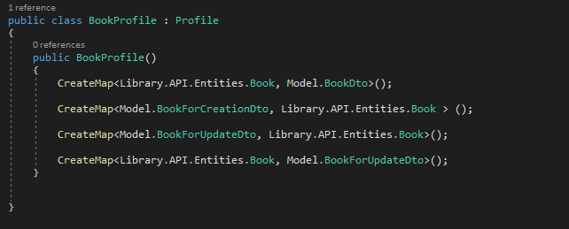 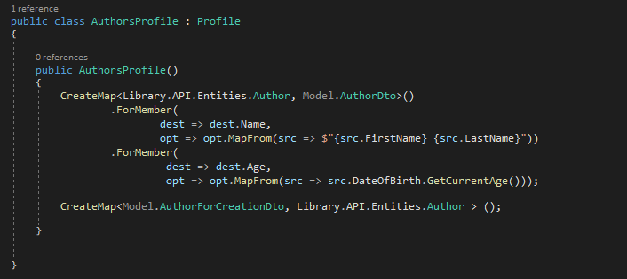Entities folder contains classes that will persist in data store
Model folder contains Dto classes (used for mapping and returning from our Controller methods so that we don't have to return entire Entity)
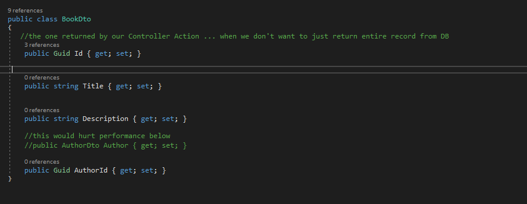- AutoMapper.Extensions.Microsoft.DependencyInjection
- Microsoft.AspNetCore.JsonPatch
- Microsoft.AspnetCore.Mvc.NewtonsoftJson
- Microsoft.EntityFrameworkCore
- Microsoft.EntityFrameworkCore.SqlServer
- Microsoft.EntityFrameworkCore.Tools
possible Nuget Packages:
cacheable Constraint = Each response message must explicitly state if it can be cached or not
considered best-practice to implement paging on each collection ... or at least on those Resources that can also be created? Parameters for paging passed through via the query string. Users should be able to specify the page # and page size ( page size should be limited). IF no parameters ...just return the first page by default. PAGING should go all the way through to the data store ... IE don't wait to Page the data in the controller .... do it in database
Deferred Execution helps with this = Query variable itself never holds the query results themselves ... Query execution occurs sometime after the query is constructed (use IQueryable
Returning MetaData = think about returning links to the previous and next pages ... can include additional information (total count, amount of pages, etc...)
Use a custom header, like X-Pagination on the reponse
for returning pagination collections = created a Custom PagedList
Allowing sorting on resource fields, not on fields that lie beneath that layer
Return the OrderBy clause as query string in pagination links
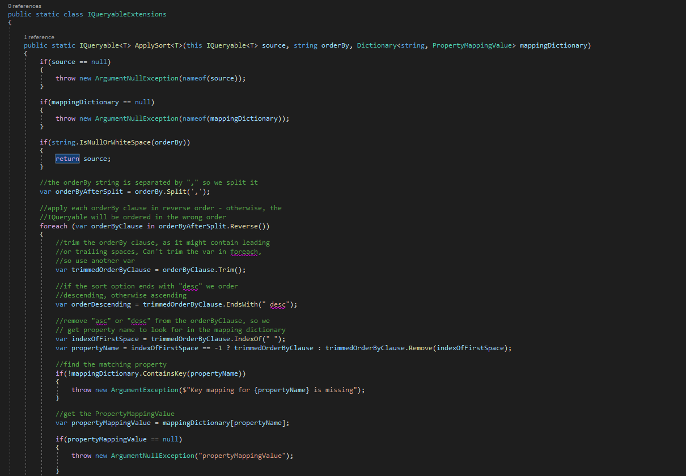 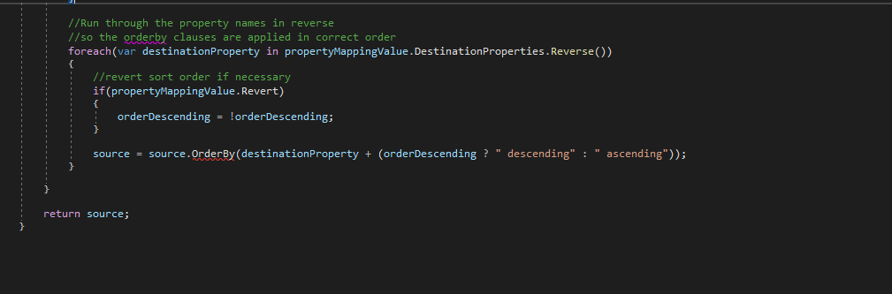Data Shaping
 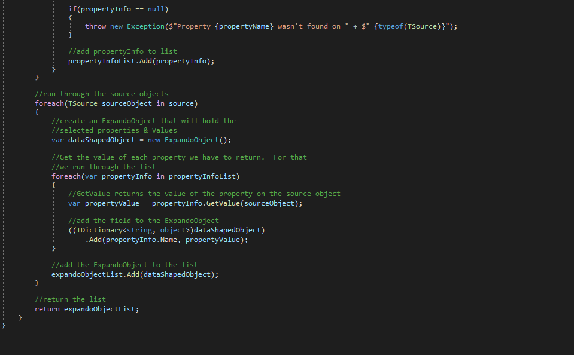
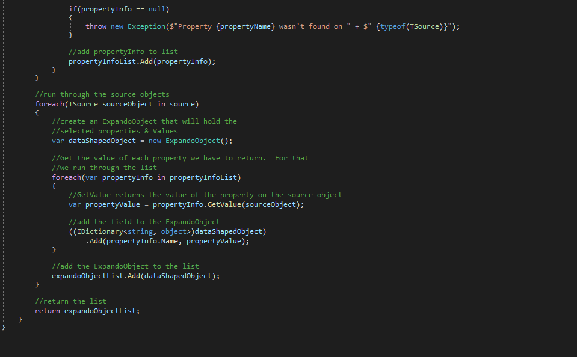
ExpandoObject = Object whose members can be dynamically added or removed at RunTime
Data shaping allows consumer of the API to choose the resource fields (instead of returning all the fields of the Author for example) fields =id, name (shape on fields of the resource, not on the fields of lower-level layer objects)
Dynamically creating an object from our ObjectDtos (at RunTime) to return in responses
thread pool starvation (common cause of slow, bottlenecked code) -- where your thread pool is too busy exhausted and is unavailable to jump around and pick up new requests
- Redis caching through StackExchange --> Redis bulk data management
- ConnectionMultiplexer.Connect(Connection) --> ConnectionMultiplexer.ConnectAsync(Connection)
Possible issues:
Redis bulk data management
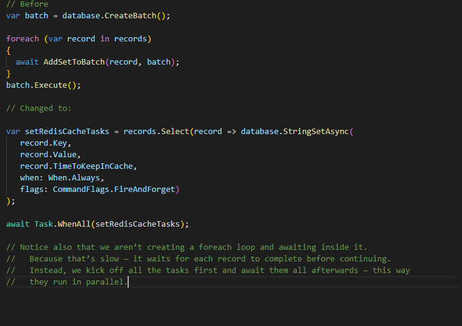Logging Output
Serilog Library -- Console Standard Out (console output was slow)
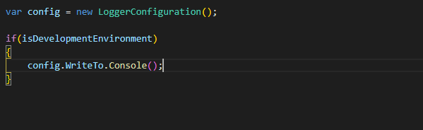Cancelling redundant tasks -- Polly
Polly -- helps you easily control tasks such as timeouts, retrying failed code, and some other powerful functionality
- Timeout after 30 seconds
- Retry three times if the request fails (this can include failing due to the timeout)
- If it failed after three times, throw an exception back to our application so that we can return an error on our API response
- about connections: Waiting forever (having no timeout) is a bad design strategy: it specifically leads to the blocking up of threads or connections (itself often a cause of further failure)
- Async calls must be used wherever possible to avoid thread pool starvation
- As for long-running dependency calls, we now know that we need to provide cancellation support where appropriate, with the implemenation in place of timing out and cancelling those tokens.
Polly settings:
HTTP cache (holy Grail)
response caching middleware
every response should define itself as cacheable or not
cache is separate component that sits between the client (user) and the API itself
Receives repsonses from the API and stores them if they are deemed cacheable
Accepts requests from consumer to the API
It's the middle-man of request-response communication
- Client Cache ... Lives on the client (private cache), cache on your mobile device ... cache on LocalStorage (Angular)
- Gateway Cache ... Lives on the server (shared)
- Proxy Cache ... Lives on the network (shared cache) ... (used by corporations to serve thousands)
3 Cache Types:
Reponse Cache Attribute and Middleware
state for each resource whether or not it's cacheable
Cache-Control: max-age=120 (says it's cacheable only for 120 seconds)
doesn't actually cache anything ... (need a cache store)
Postman by default sends a no-cache request (go into settings and turn off "send-no-cache header"
ResponseCaching Middleware
services.AddResponseCaching(); inside Startup.cs
app.UseResponseCaching(); inside Startup.cs in Configure method (make sure it's before all the other app.Use ones)
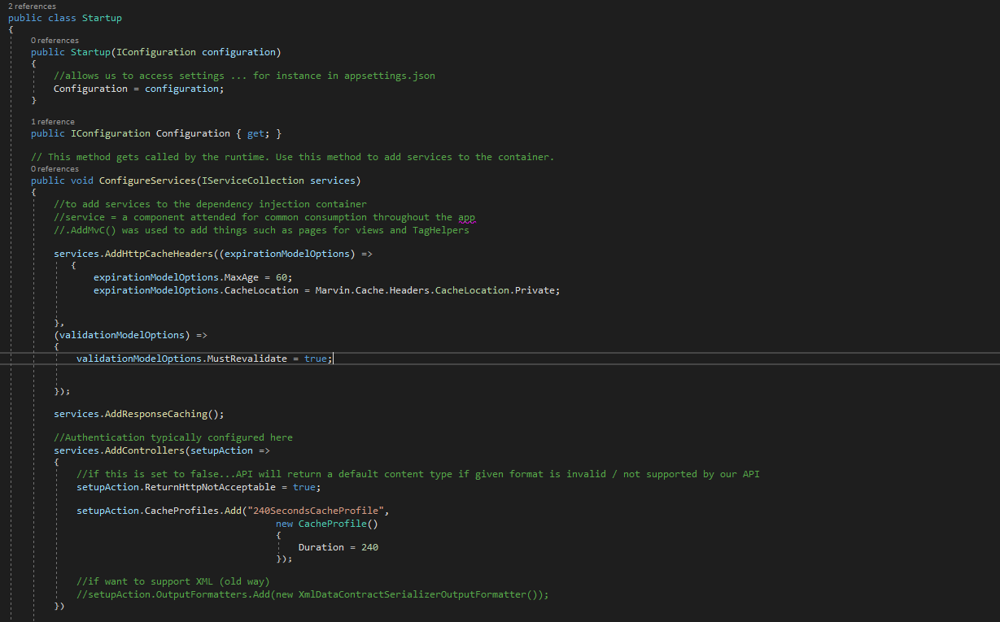 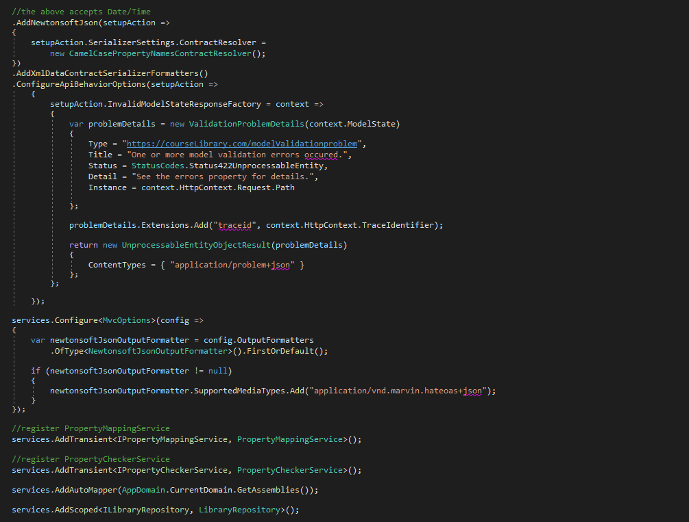 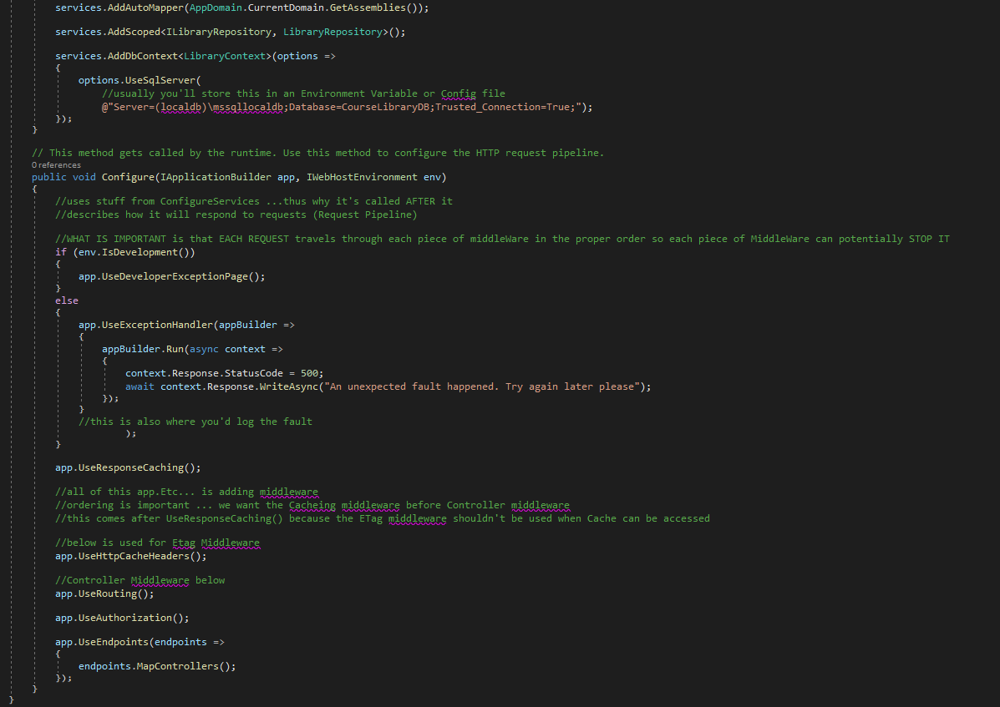Cache Profiles -- add into services.AddControllers() in Startup.cs
- Allows the server to state how long a response is considered fresh
- Expires Header HAS been superceded by Cache-Control header
- Cache-Control header
- Private Cache + Reduces bandwidth requirements ++ Less Requests from cache to API
- Shared Cache + Doesn't save bandwidth between cache and API ++ Drastically lowers requests to the API
Expiration Model
- Used to validate the freshness of a response that's been cached
- Strong Validators: + Change if the body or headers of a response change ++ use ETag (Entity Tag) response headers ETag: "12345" +++ Can be used for concurrency checks too (when updating resources)
- Weak Validators: + Doesn't always change when response changes (up to server) last modified: (example ... weak because 1 second gap) ETag: "w/12345" (weak example)
- use weak when you DON'T necessarily need the most recent version ( a Resource we can GET as well as UPDATE = bad use of weak)
- Private cache (client side) + Reduces bandwidth requirements
- Shared (public) Saves bandwidth between cache (middleware between client and API) and API (Api doesn't have to recreate the response)
Validation Model (not supported by DOTnet core middleware)
Expiration and Validation Models are usually combined
Private cache
As long as the response hasn't expired (Isn't stale), thate response can be returned from the cache
Reduces communication with the API (including response generation), reduces bandwidth requirements
If it has expired, the API is hit
Public Cache
As long as the response hasn't expired (isn't stale) that response can be returned from the cache
Reduces bandwidth requirements between cache and API, dramatically reduces request to the API
If it has expired, the API is hit
Bandwidth between cache and API and response generation is potentially reduced
Cache-Control Directives
Response:
Freshness (max-age, s-maxage) ... can set different for private / public
Cache Type (public, private)
Validation (no-cache, must-reavalidate, proxy-reavalidate)
other (no-store, no-transform) no-store = for confidentiality reasons
Request (by Client):
Freshness (max-age, min-fresh, max-stale)
Validation (no-cache)
Other (no-store, no-transform, only-if-cached)
Supporting Http Cache
ETags are preferred over dates as they are strong validators
Marvin.Cache.Headers (useful Header middleware from tutorial)
IF a response is stale, a cache must validate it using ETags
MSFT Response cache good for simple use cases ... like Expiration ... ONCE VALIDATION comes into play ... (Add in Marvin.Cache middleware)
Cache Stores and CDNs
most cache stores are full-blown cache servers, not pieces of middleware
private caches LIVE on the CLIENT
Xamarin ... probably needs CacheCow.Client
Shared Caches = gateway or proxy caches
Varnish, Apache Traffic Server, Squid
CDNs
extensively use caching: Http cache (Azure CDN, Cloudfare, Akamai)
Not recommended to implement cache-control at API level ... instead ensure API can return Cache-Control headers and supports expiration / validation models (Combine that with a cache server or CDN)
Cache Invalidation
wiping a response from the cache because you know it isn't the correct version anymore (a lot is automated) (responses go stale, ETags get updated)
Concurrency Strategies
Pessimistic concurrency (not possible in REST) ... Resource Locked
Optimistic concurrency (supported with Etags)
Token is returned together with resource
The udpate can happen as long as the token is still valid
The Marvin.Cache Nuget package handles this stuff for us
use ETags as tokens/validators for an optimistic concurrency strategy
Send as If-Match header value
on mismatch, 412 Precondition Failed will be returned
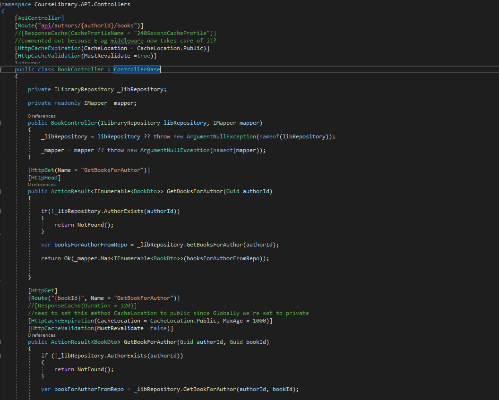 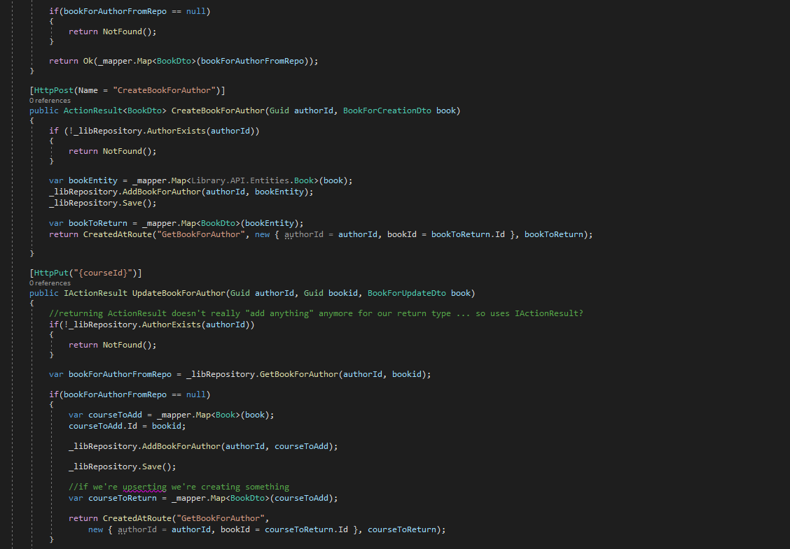 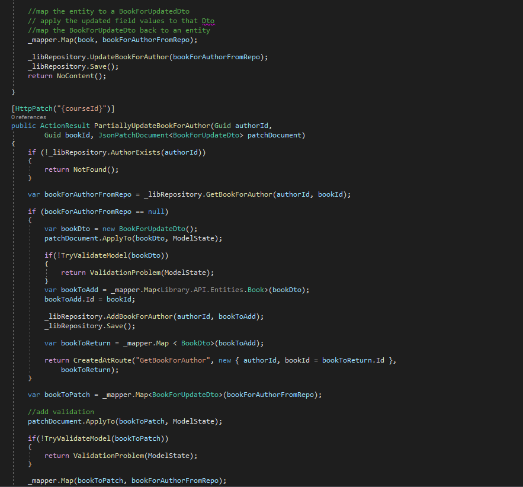 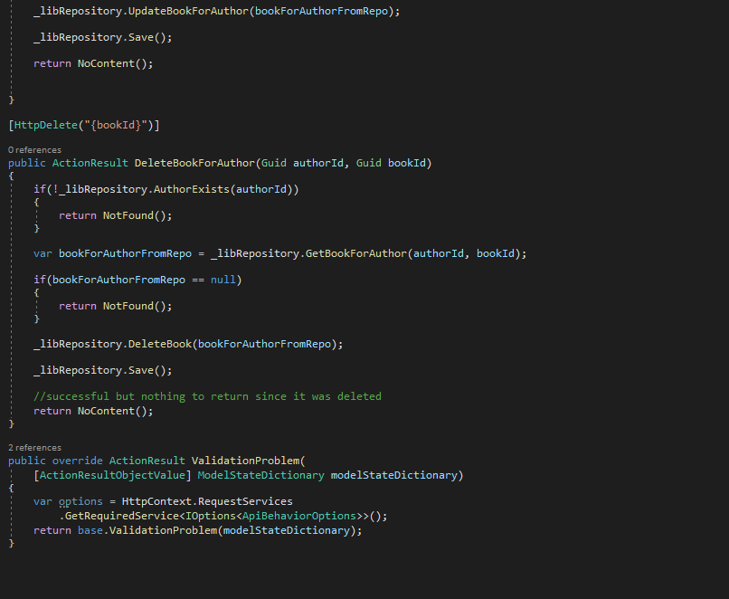Map (using IMapper) between Entities (classes) and Dtos (Model folder (what we return from our controllers))
- fields not passed ... should be sets to default values
- 200 for OK or 204 for No Content
- Not safe BUT idempotent
All fields should be updated as the Result of a put request
- JSON Patch standard
- validate the patched DTO
- 200 for OK or 204 for No Content
- Not Safe
- Not Idempotent
PATCH for partial updates
validation: to minimize code duplication ... we can work with abstract base classes and mark common properties with virtual to allow for their own implementation
Vendor-specific Media Types
application/vnd.marvin.hateoas+json
need to register / set-up valid OutputFormatters in startup.cs
there should be only one suffix per media type, and only officially registered suffixes should be used
always provide a default representation that will be returned when no semantic information is passed through (eg: application/json)
HATEOAS (tells User what they can do with our API)
HATEOS links should be return only when the correct media type is requested
(Hypermedia as the Application State)
helps with evolvability and self descriptiveness
if an API fails @ HATEOAS ... then a user of the API must know more than they should ... if an API fails @ HATEOAS ... the API cannot evolve separately of consuming applications
Adapting to change:
HATEOAS for changes to functionality and business rules
Versioned media types (until code on demand feasible)
creating a Dto (to return from requests)
1) create a Model class (dto)
2) add a Mapping profile (or just a CreateMap () in already existing Mapping Profile)
Advanced content negotation
Caching and concurrency
Not recommended to implement cache-control at API level ... instead ensure API can return Cache-Control headers and supports expiration / validation models (Combine that with a cache server or CDN)
Paging, sorting, data shaping